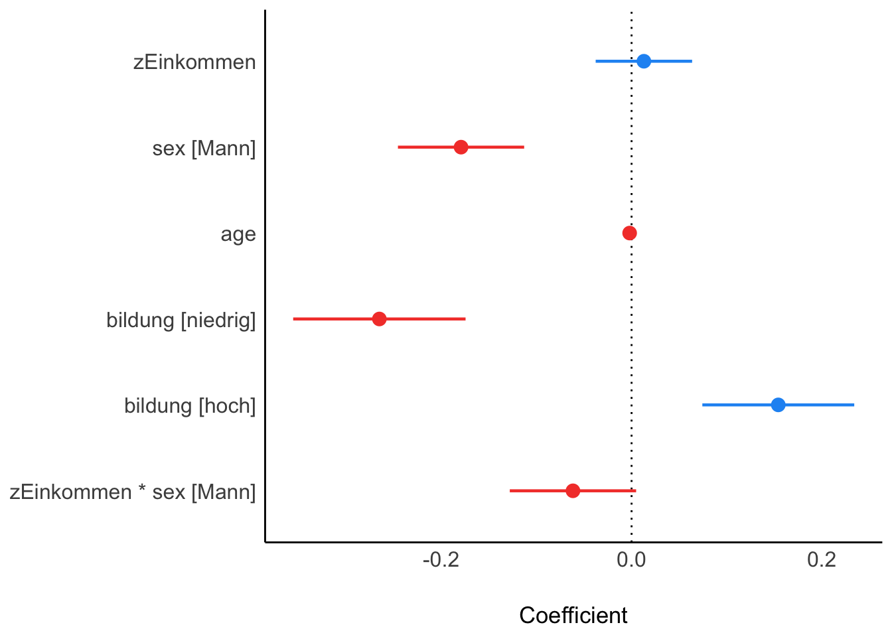
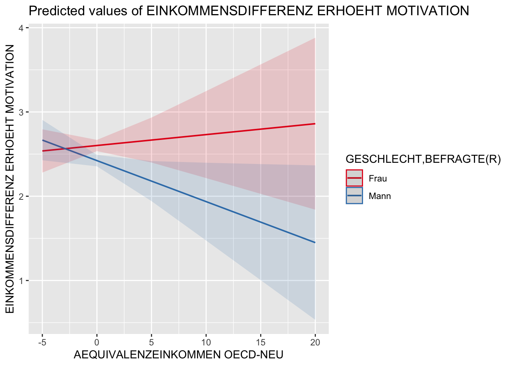

5 Multivariate Datenanalyse
In diesem Kapitel werden unsere Ansätze vorgestellt, um multivariate Datenanalysen in R durchzuführen. Dabei müssen wir an verschiedenen Stellen auf andere Pakete zurück greifen, um die Analysen durchzuführen. Zwar beinhalten auch die bisher verwendeten Pakete tw. multivariate Analysemöglichkeiten, doch häufig ohne die Möglichkeit die Analysen auch zu gewichten. Das Kaptiel umfasst die Korrelationsanalyse, Faktorenanalysen und Regressionsanalysen.
5.1 Korrelationsmatrix
| Packet | Funktion | Verwendung |
|---|---|---|
| weights | wtd.cor() | Korrelationsmatrix |
| corrplot | corrplot() | Grafiken zu Korrelationsanalysen |
Wtd.cor()
Zur Berechnung der Korrelationsmatrix verwenden wir die wtd.cor() Funktion aus dem weights Paket. In getrennter tabellarischen Darstellung werden die Korrelationskoeffizienten, die Standardfehler, die t-Werte sowie die p-Werte ausgegeben.
library(weights)Syntax:
# Ohne Pipe
wtd.cor(datensatz[c("Variable1", "variable2", "variable3")], weight = datensatz$gewicht)
# Mit Pipe
# Nicht gut zu handhaben!Beispielcode:
# Datensatz erstellen
ds <- allbus2018 %>%
select(im19:im21, id01, wghtpew)
#Berechnung der Korrelationsmatrix
corMatrix <- wtd.cor(ds[1:4], weight = ds$wghtpew)
corMatrix
#> $correlation
#> im19 im20 im21 id01
#> im19 1.00000000 0.51469202 0.3452849 0.03606102
#> im20 0.51469202 1.00000000 0.5031235 -0.02409378
#> im21 0.34528492 0.50312350 1.0000000 -0.16428931
#> id01 0.03606102 -0.02409378 -0.1642893 1.00000000
#>
#> $std.err
#> im19 im20 im21 id01
#> im19 7.895494e-17 1.492272e-02 1.624389e-02 1.737802e-02
#> im20 1.492272e-02 1.144824e-15 1.495593e-02 1.739744e-02
#> im21 1.624389e-02 1.495593e-02 9.207409e-16 1.702737e-02
#> id01 1.737802e-02 1.739744e-02 1.702737e-02 4.070850e-17
#>
#> $t.value
#> im19 im20 im21 id01
#> im19 1.266545e+16 3.449049e+01 2.125629e+01 2.075094e+00
#> im20 3.449049e+01 8.734970e+14 3.364041e+01 -1.384903e+00
#> im21 2.125629e+01 3.364041e+01 1.086082e+15 -9.648546e+00
#> id01 2.075094e+00 -1.384903e+00 -9.648546e+00 2.456490e+16
#>
#> $p.value
#> im19 im20 im21 id01
#> im19 0.000000e+00 6.726140e-223 3.831939e-94 3.805500e-02
#> im20 6.726140e-223 0.000000e+00 6.568035e-214 1.661756e-01
#> im21 3.831939e-94 6.568035e-214 0.000000e+00 9.526801e-22
#> id01 3.805500e-02 1.661756e-01 9.526801e-22 0.000000e+00Corrplot()
Für die grafische Aufbereitung der Korrelationsmatrix bietet das Paket corrplot mit der Funktion corrplot eine einfache, aber anschauliche Möglichkeit. Auch für diese Funktion stehen eine Reihe verschiedener Argumente zur Verfügung, mit denen die Grafik angepasst werden kann.
library(corrplot)Syntax:
# Ohne Pipe
corrplot(korrelationsmatrix, method=number)
# Mit Pipe
# Nicht gut zu handhaben!Beispielcode:
# Grafik der Korrelationsmatrix erstellen
# Achtung! Die Funktionen corrplot() und corrplot.mixed laufen noch nicht 100% stabil
corrplot(corMatrix$correlation, p.mat = corMatrix$p.value, method = "circle",
tl.col = "black", addCoef.col = "black", cl.cex = .7, number.cex = .7,
insig = "pch")
5.2 Explorative Faktoranalyse und Hauptkomponentenanalyse
Für die explorative Faktorenanalyse werdeb im folgenden zwei gängige Tests zur Prüfung der Voraussetzung (KMO, Bartlett), eine grafische Veranschaulichung zur Bestimmung der Anzahl der Faktoren (Screeplot), die Hauptkomponentenanalyse, die Faktorenanalyse sowie eine einfache Möglichkeit der grafischen Darstellung der Faktorenstruktur angeboten.
Die notwendigen Funktionen entnehmen wir dabei überwiegend aus dem psych Paket.
| Packet | Funktion | Verwendung |
|---|---|---|
| psych | KMO() | Kaiser-Meyer-Olkin-Kriterium (MSA) |
| stats | bartlett.test() | Bartlett-Test |
| psych | scree() | Scree-Test |
| psych | principal() | Hauptkomponentenanalyse |
| psych | fa() | Faktoranalyse |
| psych | fa_diagram() | Grafik |
library(psych)KMO()
Das Kaiser-Meyer-Olkin-Kriterium berechnen wir mit der Funktion KMO(). Ausgegeben wird KMO (bzw. MSA) gesamt sowie einzeln für jedes Item.
Achtung! Ungewichtete Analyse.
Syntax:
# Ohne Pipe
KMO(datensatz[c("Variable1", "variable2", "variable3")])
# Mit Pipe
datensatz %>%
select(variable1, variable2, variable3) %>%
KMO()
Beispielcode:
# KMO/MSA
allbus2018 %>%
select(im19:im21, id01) %>%
KMO()
#> Kaiser-Meyer-Olkin factor adequacy
#> Call: KMO(r = .)
#> Overall MSA = 0.63
#> MSA for each item =
#> im19 im20 im21 id01
#> 0.66 0.61 0.66 0.45Bartlett.test()
Den Bartlett Test führen wir mit der Funktion bartlett.test aus. Ausgegeben werden die Test Statistics, die Freiheitsgrade sowie der p-wert.
Achtung! Ungewichtete Analyse.
Syntax:
# Ohne Pipe
bartlett.test(datensatz[c("Variable1", "variable2", "variable3")])
# Mit Pipe
datensatz %>%
select(variable1, variable2, variable3) %>%
bartlett.test()
Beispielcode:
# Bartlett-Test
allbus2018 %>%
select(im19:im21, id01) %>%
bartlett.test()
#>
#> Bartlett test of homogeneity of variances
#>
#> data: .
#> Bartlett's K-squared = 299.4, df = 3, p-value < 2.2e-16Scree()
Einen Screeplot können wir mit der Funktion scree() abrufen. Im default wird dabei der Graph für Komponenten und Faktoren angezeigt und zur Lesehilfe eine horizontale Linie bei einem Eigenwert von 1.0 gezeichnet.
Achtung! Ungewichtete Analyse.
Syntax:
# Ohne Pipe
scree(datensatz[c("Variable1", "variable2", "variable3")])
# Mit Pipe
datensatz %>%
select(variable1, variable2, variable3) %>%
scree()
Beispielcode:
# Scree-Plot
allbus2018 %>%
select(im19:im21, id01) %>%
scree() 
Principal()
Für eine Hauptkomponentenanalyse verwenden wir die Funktion principal(). Über die Argumente können verschiedene Spezifikationen wie beispielweise die Anzahl der zu extrahierenden Komponenten (nfactors) oder die Rotationsmethode (rotate) festgelegt werden.
Syntax:
# Ohne Pipe
principal(datensatz[c("Variable1", "variable2", "variable3")],
weight = datensatz$gewicht, nfactors = 1, rotate = "varimax",
use = "pairwise", scores = T)
# Mit Pipe
# Nicht gut zu handhaben!Beispielcode:
# Datensatz erstellen
ds <- allbus2018 %>%
select(im19:im21, id01, wghtpew)
# Hauptkomponentenanalyse
pca <- principal(ds[1:4], weight = ds$wghtpew, nfactors = 2, rotate = "varimax",
use = "pairwise")
pca
#> Principal Components Analysis
#> Call: principal(r = ds[1:4], nfactors = 2, rotate = "varimax", use = "pairwise",
#> weight = ds$wghtpew)
#> Standardized loadings (pattern matrix) based upon correlation matrix
#> RC1 RC2 h2 u2 com
#> im19 0.79 0.17 0.65 0.351 1.1
#> im20 0.86 0.00 0.73 0.268 1.0
#> im21 0.74 -0.31 0.65 0.355 1.4
#> id01 0.00 0.96 0.93 0.071 1.0
#>
#> RC1 RC2
#> SS loadings 1.90 1.06
#> Proportion Var 0.47 0.26
#> Cumulative Var 0.47 0.74
#> Proportion Explained 0.64 0.36
#> Cumulative Proportion 0.64 1.00
#>
#> Mean item complexity = 1.1
#> Test of the hypothesis that 2 components are sufficient.
#>
#> The root mean square of the residuals (RMSR) is 0.14
#> with the empirical chi square 813.23 with prob < NA
#>
#> Fit based upon off diagonal values = 0.82
# Ladungen (Übersichtlicher)
print(pca$loadings, digits = 2, cutoff = .2)
#>
#> Loadings:
#> RC1 RC2
#> im19 0.79
#> im20 0.86
#> im21 0.74 -0.31
#> id01 0.96
#>
#> RC1 RC2
#> SS loadings 1.90 1.06
#> Proportion Var 0.47 0.26
#> Cumulative Var 0.47 0.74Fa()
Eine explorative Faktorenanalyse führen wir über die Funktion fa() aus. Auch wie bei der vorherigen Funktionen können die Spezifikationen der Analyse über die Argumente festgelegt werden.
Syntax:
# Ohne Pipe
fa(datensatz[c("Variable1", "variable2", "variable3")],
weight = datensatz$gewicht, nfactors = 1, rotate = "varimax",
use = "pairwise", scores = "regression")
# Mit Pipe
# Nicht gut zu handhaben!Beispielcode:
# Datensatz erstellen
ds <- allbus2018 %>%
select(im19:im21, id01, wghtpew)
# Hauptkomponentenanalyse
fa <- fa(ds[1:4], weight = ds$wghtpew, nfactors = 2, rotate = "varimax",
use = "pairwise", scores = "regression")
fa
#> Factor Analysis using method = minres
#> Call: fa(r = ds[1:4], nfactors = 2, rotate = "varimax", scores = "regression",
#> use = "pairwise", weight = ds$wghtpew)
#> Standardized loadings (pattern matrix) based upon correlation matrix
#> MR1 MR2 h2 u2 com
#> im19 0.64 0.10 0.42 0.58 1.0
#> im20 0.81 -0.04 0.65 0.35 1.0
#> im21 0.59 -0.37 0.49 0.51 1.7
#> id01 0.00 0.42 0.18 0.82 1.0
#>
#> MR1 MR2
#> SS loadings 1.41 0.33
#> Proportion Var 0.35 0.08
#> Cumulative Var 0.35 0.43
#> Proportion Explained 0.81 0.19
#> Cumulative Proportion 0.81 1.00
#>
#> Mean item complexity = 1.2
#> Test of the hypothesis that 2 factors are sufficient.
#>
#> The degrees of freedom for the null model are 6 and the objective function was 0.63 with Chi Square of 2202.75
#> The degrees of freedom for the model are -1 and the objective function was 0
#>
#> The root mean square of the residuals (RMSR) is 0
#> The df corrected root mean square of the residuals is NA
#>
#> The harmonic number of observations is 3341 with the empirical chi square 0 with prob < NA
#> The total number of observations was 3477 with Likelihood Chi Square = 0 with prob < NA
#>
#> Tucker Lewis Index of factoring reliability = 1.003
#> Fit based upon off diagonal values = 1
#> Measures of factor score adequacy
#> MR1 MR2
#> Correlation of (regression) scores with factors 0.87 0.56
#> Multiple R square of scores with factors 0.76 0.32
#> Minimum correlation of possible factor scores 0.52 -0.36
# Ladungen (Übersichtlicher)
print(fa$loadings, digits = 2, cutoff = .2)
#>
#> Loadings:
#> MR1 MR2
#> im19 0.64
#> im20 0.81
#> im21 0.59 -0.37
#> id01 0.42
#>
#> MR1 MR2
#> SS loadings 1.41 0.33
#> Proportion Var 0.35 0.08
#> Cumulative Var 0.35 0.43Fa.diagram()
Eine einfache grafische Aufbereitung der durchgeführten Analysen (Hauptkomponenten- bzw. Faktorenanalysen) kann mit der Funktion fa.diagram() erstellt werden. Die folgenden Beispiele illustieren dies für die beiden vorherigen Analysen.
Syntax:
# Ohne Pipe
fa.diagram(modell)
# Mit Pipe
# Nicht gut zu handhaben!Beispielcode:
# PCA
fa.diagram(pca)
# FA
fa.diagram(fa)5.3 Konfirmatorische Faktorenanalyse
Wir wollen an dieser Stelle kurz auf Möglichkeiten konfirmatorischer Faktorenanalyse eingehen. Dies geschieht hier vor allem aus dem Grund, da über diesen kleinen Umweg eine gewichtete Realiabilitätsanalyse durchführbar ist. Eine andere Möglichkeit gewichtete Realiabilitätsanalysen zu berechnen ist uns derzeit nicht bekannt.
Zur Berechnung konfirmatorischen Faktorenanalyse verwenden wir die cfa() Funktion aus dem lavaanPaket, welches vor allem auch zur Strukturgleichungsmodellierung eignesetzt werden kann. Mit der semPath()Funktion (aus dem semPlot Paket) können wir die berechnete Faktorenanalyse grafisch aufbereiten.
| Packet | Funktion | Verwendung |
|---|---|---|
| lavaan | cfa() | Konfirmatorische Faktorenanalyse |
| semPlot | semPaths() | Grafik |
library(lavaan)
library(semPlot)5.3.0.1 Modellspezifikation
Zur Berechnung der konfirmatorischen Faktorenanalyse müssen wir zunächst das Modell spezifizieren. Mit faktorname, =~ und den folgenden Variablen legen wir die Faktorenstruktur fest. Für Details zur verwendeten Syntax kann sich auf den Hilfeseiten des lavaan Pakets weitergehend informiert werden.
m1 <- "faktor =~ im19 + im20 + im21 + id01"Cfa()
Mit der cfa Funktion berechnen wir unser Modell, welche wir unter m1 spezifiziert haben. Wir speichern das Ergebnis als neues Objekt cfa ab und lassen uns die mit den Argumenten festgelegten Werte mit der summary Funktion ausgeben.
Syntax:
# ohne Pipe
cfa(model = modell, data = datensatz[c("Variable1", "variable2", "variable3")], sampling.weights = "gewicht",
estimator = "MLR")
# Mit Pipe
# Nicht gut zu handhaben!Beispielcode:
# Datensatz erstellen
ds <- allbus2018 %>%
select(im19:im21, id01, wghtpew)
# Faktorenanalyse
cfa <- cfa(model = m1, data = ds, sampling.weights = "wghtpew", estimator = "MLR")
summary(cfa, fit.measures = T, standardized = T, rsquar = T)
#> lavaan 0.6-10 ended normally after 21 iterations
#>
#> Estimator ML
#> Optimization method NLMINB
#> Number of model parameters 8
#>
#> Used Total
#> Number of observations 3227 3477
#> Sampling weights variable wghtpew
#>
#> Model Test User Model:
#> Standard Robust
#> Test Statistic 124.514 119.760
#> Degrees of freedom 2 2
#> P-value (Chi-square) 0.000 0.000
#> Scaling correction factor 1.040
#> Yuan-Bentler correction (Mplus variant)
#>
#> Model Test Baseline Model:
#>
#> Test statistic 2117.930 1603.994
#> Degrees of freedom 6 6
#> P-value 0.000 0.000
#> Scaling correction factor 1.320
#>
#> User Model versus Baseline Model:
#>
#> Comparative Fit Index (CFI) 0.942 0.926
#> Tucker-Lewis Index (TLI) 0.826 0.779
#>
#> Robust Comparative Fit Index (CFI) 0.942
#> Robust Tucker-Lewis Index (TLI) 0.826
#>
#> Loglikelihood and Information Criteria:
#>
#> Loglikelihood user model (H0) -14929.146 -14929.146
#> Scaling correction factor 1.153
#> for the MLR correction
#> Loglikelihood unrestricted model (H1) -14866.889 -14866.889
#> Scaling correction factor 1.131
#> for the MLR correction
#>
#> Akaike (AIC) 29874.293 29874.293
#> Bayesian (BIC) 29922.927 29922.927
#> Sample-size adjusted Bayesian (BIC) 29897.508 29897.508
#>
#> Root Mean Square Error of Approximation:
#>
#> RMSEA 0.138 0.135
#> 90 Percent confidence interval - lower 0.118 0.115
#> 90 Percent confidence interval - upper 0.159 0.156
#> P-value RMSEA <= 0.05 0.000 0.000
#>
#> Robust RMSEA 0.138
#> 90 Percent confidence interval - lower 0.117
#> 90 Percent confidence interval - upper 0.159
#>
#> Standardized Root Mean Square Residual:
#>
#> SRMR 0.049 0.049
#>
#> Parameter Estimates:
#>
#> Standard errors Sandwich
#> Information bread Observed
#> Observed information based on Hessian
#>
#> Latent Variables:
#> Estimate Std.Err z-value P(>|z|) Std.lv Std.all
#> faktor =~
#> im19 1.000 0.560 0.596
#> im20 1.380 0.064 21.512 0.000 0.773 0.865
#> im21 0.843 0.038 22.336 0.000 0.472 0.583
#> id01 -0.062 0.027 -2.262 0.024 -0.035 -0.050
#>
#> Variances:
#> Estimate Std.Err z-value P(>|z|) Std.lv Std.all
#> .im19 0.569 0.021 27.188 0.000 0.569 0.645
#> .im20 0.202 0.028 7.246 0.000 0.202 0.252
#> .im21 0.434 0.017 25.717 0.000 0.434 0.660
#> .id01 0.490 0.013 37.103 0.000 0.490 0.998
#> faktor 0.314 0.021 14.696 0.000 1.000 1.000
#>
#> R-Square:
#> Estimate
#> im19 0.355
#> im20 0.748
#> im21 0.340
#> id01 0.002semPaths()
Mit der semPath Funktion kann eine grafische Aufbereitung der Faktorenanalyse erstellt werden. Auch hier können über verschiedene Argumente der Funktion die Grafik den eigenen Wünschen angepasst werden.
Syntax:
# ohne Pipe
semPaths(object = cfa-Objekt, whatLabels = "std", layout = "tree", edge.color = "black")
# Mit Pipe
# Nicht gut zu handhaben!Beispielcode:
semPaths(cfa, whatLabels = "std", layout = "tree", edge.color = "black")
5.4 Realiabilitätsanalyse
Mit der reliability() Funktion aus dem semTools Paket können wir nun im Anschluss an die berechnete konfirmatorische Faktorenanalyse die Realiabilitätsanalyse durchführen.
| Packet | Funktion | Verwendung |
|---|---|---|
| semTools | reliability() | Reliabilitätsmaße |
library(semTools)reliability()
Zur Berechnung der Realiabilität setzen wir einfach die im Objekt cfa gespeicherten Ergebnisse der konfirmatorischen Faktorenanalyse in die realiability() Funktion ein.
Syntax:
# ohne Pipe
reliability(object = cfa-Objekt)
# Mit Pipe
# Nicht gut zu handhaben!Beispielcode:
reliability(cfa)## faktor
## alpha 0.5428065
## omega 0.6491118
## omega2 0.6491118
## omega3 0.6567407
## avevar 0.40122265.5 Regressionsanalyse
Im abschließenden Kapitel zur multivarianten Datenanalyse behandeln wir noch Möglichkeiten der Regressionsanalysen, verschiedene Möglichkeiten zum Testen der Modellgüte sowie der grafischen Aufbereitung der Modelle.
| Packet | Funktion | Verwendung |
|---|---|---|
| stats | lm() | lineare Regressionsmodelle |
| parameters | model_parameters() | Modellparameter ausgeben |
| stats | anova() | F-Tests auf Gesamtsignifikanz |
| performance | model_performance() | Modellgüte |
| performance | compare_performance() | Vergleich der Modellgüte |
| texreg | screenreg() | tabellarischer Modellvergleich |
| sjplot | plot_model() | grafische Darstellungen von Regressionsmodellen |
| sjplot | plot_models() | grafischer Modellvergleich |
| sjplot | check_model() | 6 Grafiken zur Modellgüte |
| stats | glm() | logistische Regressionsmodelle (u.A.) |
Lm()
Ein lineares Regressionsmodell können wir mit der lm() Funktion berechnen.
Syntax:
# Ohne Pipe
lm(av ~ uv1 + uv2*uv3 + uv4 + uv1:uv4, datensatz, weights = gewicht)
# Mit Pipe
# Nicht gut zu handhaben!Zur Veranschaulichung ist im Beispiel dazu die Datenaufbereitung aufgeführt, dessen Ergebnis im neuen Datensatz ds gespeichert wird. Anschließend wird das Nullmodell spezifiziert, mit dem unser Modell verglichen werden soll. Dann folgt die Spezifikation unserer Modelle, ohne (model1) und mit Interaktion (model2.1 und model2.2, unterschiedliche Schreibweise).
Beispielcode:
# Datensatz erstellen
ds <- allbus2018 %>%
select(im19, sex, age, educ, di08, wghtpew) %>%
# Z-Standardisierung Einkommen
mutate(wMean = weighted_mean(di08, weights = wghtpew),
wSD = weighted_sd(di08, weights = wghtpew),
zEinkommen = (di08-wMean)/wSD) %>%
# Rekodierung Geschlecht und Bildung
mutate(sex = rec(sex, rec = "1=1 [Mann]; 2=0 [Frau]"),
bildung = rec(educ, rec = "1:2=1 [niedrig]; 3=2 [mittel];
4:5=3 [hoch]; else=NA")) %>%
# Konvertierung in Faktor Geschlecht und Bildung
to_label(sex, bildung) %>%
# Refrenzkategorie Bildung auf mittel
ref_lvl(bildung, lvl = 2) %>%
# Löschung NA
drop_na()
# Nullmodell
nullmodel <- lm(im19 ~ 1, ds, weights = wghtpew)
summary(nullmodel)
#>
#> Call:
#> lm(formula = im19 ~ 1, data = ds, weights = wghtpew)
#>
#> Weighted Residuals:
#> Min 1Q Median 3Q Max
#> -1.653 -0.554 0.366 0.545 1.644
#>
#> Coefficients:
#> Estimate Std. Error t value Pr(>|t|)
#> (Intercept) 2.50410 0.01722 145.4 <2e-16 ***
#> ---
#> Signif. codes: 0 '***' 0.001 '**' 0.01 '*' 0.05 '.' 0.1 ' ' 1
#>
#> Residual standard error: 0.9323 on 2947 degrees of freedom
# Modellierung erstes Modell
model1 <- lm(im19 ~ sex + age + bildung + zEinkommen, ds, weights = ds$wghtpew)
summary(model1)
#>
#> Call:
#> lm(formula = im19 ~ sex + age + bildung + zEinkommen, data = ds,
#> weights = ds$wghtpew)
#>
#> Weighted Residuals:
#> Min 1Q Median 3Q Max
#> -2.0162 -0.6219 0.1575 0.5760 2.0835
#>
#> Coefficients:
#> Estimate Std. Error t value Pr(>|t|)
#> (Intercept) 2.708765 0.063434 42.702 < 2e-16 ***
#> sexMann -0.179526 0.033839 -5.305 1.21e-07 ***
#> age -0.002105 0.001042 -2.020 0.043423 *
#> bildungniedrig -0.265591 0.046215 -5.747 1.00e-08 ***
#> bildunghoch 0.153043 0.040719 3.759 0.000174 ***
#> zEinkommen -0.021174 0.017799 -1.190 0.234299
#> ---
#> Signif. codes: 0 '***' 0.001 '**' 0.01 '*' 0.05 '.' 0.1 ' ' 1
#>
#> Residual standard error: 0.9113 on 2942 degrees of freedom
#> Multiple R-squared: 0.04614, Adjusted R-squared: 0.04452
#> F-statistic: 28.46 on 5 and 2942 DF, p-value: < 2.2e-16
# Prüfung auf Interaktioneffekt zwischen Geschlecht und zEinkommen
model2.1 <- lm(im19 ~ zEinkommen + sex + age + bildung + zEinkommen:sex, ds,
weights = ds$wghtpew)
summary(model2.1)
#>
#> Call:
#> lm(formula = im19 ~ zEinkommen + sex + age + bildung + zEinkommen:sex,
#> data = ds, weights = ds$wghtpew)
#>
#> Weighted Residuals:
#> Min 1Q Median 3Q Max
#> -2.0060 -0.6160 0.1637 0.5931 2.1158
#>
#> Coefficients:
#> Estimate Std. Error t value Pr(>|t|)
#> (Intercept) 2.707154 0.063416 42.689 < 2e-16 ***
#> zEinkommen 0.012940 0.025846 0.501 0.616637
#> sexMann -0.179216 0.033826 -5.298 1.26e-07 ***
#> age -0.002042 0.001042 -1.960 0.050066 .
#> bildungniedrig -0.265051 0.046198 -5.737 1.06e-08 ***
#> bildunghoch 0.154179 0.040707 3.787 0.000155 ***
#> zEinkommen:sexMann -0.061611 0.033856 -1.820 0.068896 .
#> ---
#> Signif. codes: 0 '***' 0.001 '**' 0.01 '*' 0.05 '.' 0.1 ' ' 1
#>
#> Residual standard error: 0.9109 on 2941 degrees of freedom
#> Multiple R-squared: 0.04722, Adjusted R-squared: 0.04527
#> F-statistic: 24.29 on 6 and 2941 DF, p-value: < 2.2e-16
# ODER
model2.2 <- lm(im19 ~ zEinkommen*sex + age + bildung, ds, weights = ds$wghtpew)
summary(model2.2)
#>
#> Call:
#> lm(formula = im19 ~ zEinkommen * sex + age + bildung, data = ds,
#> weights = ds$wghtpew)
#>
#> Weighted Residuals:
#> Min 1Q Median 3Q Max
#> -2.0060 -0.6160 0.1637 0.5931 2.1158
#>
#> Coefficients:
#> Estimate Std. Error t value Pr(>|t|)
#> (Intercept) 2.707154 0.063416 42.689 < 2e-16 ***
#> zEinkommen 0.012940 0.025846 0.501 0.616637
#> sexMann -0.179216 0.033826 -5.298 1.26e-07 ***
#> age -0.002042 0.001042 -1.960 0.050066 .
#> bildungniedrig -0.265051 0.046198 -5.737 1.06e-08 ***
#> bildunghoch 0.154179 0.040707 3.787 0.000155 ***
#> zEinkommen:sexMann -0.061611 0.033856 -1.820 0.068896 .
#> ---
#> Signif. codes: 0 '***' 0.001 '**' 0.01 '*' 0.05 '.' 0.1 ' ' 1
#>
#> Residual standard error: 0.9109 on 2941 degrees of freedom
#> Multiple R-squared: 0.04722, Adjusted R-squared: 0.04527
#> F-statistic: 24.29 on 6 and 2941 DF, p-value: < 2.2e-16Model_parameters()
Mit der Funktion model_parameters können wir eine tabellarische Übersicht der Modellparameter erstellen. Mit der plot Funktion erstellen wir eine simple übersichtliche Grafik des Modells (Koeffizienten mit Konfidenzintervall).
Beispielcode:
# Modellparameter in übersichtlicher Darstellung
m1Parameter <- model_parameters(model2.1)
m1Parameter
#> Parameter | Coefficient | SE | 95% CI | t(2941) | p
#> ------------------------------------------------------------------------------------
#> (Intercept) | 2.71 | 0.06 | [ 2.58, 2.83] | 42.69 | < .001
#> zEinkommen | 0.01 | 0.03 | [-0.04, 0.06] | 0.50 | 0.617
#> sex [Mann] | -0.18 | 0.03 | [-0.25, -0.11] | -5.30 | < .001
#> age | -2.04e-03 | 1.04e-03 | [ 0.00, 0.00] | -1.96 | 0.050
#> bildung [niedrig] | -0.27 | 0.05 | [-0.36, -0.17] | -5.74 | < .001
#> bildung [hoch] | 0.15 | 0.04 | [ 0.07, 0.23] | 3.79 | < .001
#> zEinkommen * sex [Mann] | -0.06 | 0.03 | [-0.13, 0.00] | -1.82 | 0.069
#>
#> Uncertainty intervals (equal-tailed) and p values (two-tailed) computed using a
#> Wald t-distribution approximation.
plot(m1Parameter)
Anova()
Um zu überprüfen, ob unsere Modelle eine Verbesserung der Anpassung an die Daten darstellen (im Vergleich zum Nullmodell oder unter einander) verwenden wir die anvoa() Funktion.
Beispielcode:
# F-Tests auf Gesamtsignifikanz (Anpassung an Daten)
anova(nullmodel, model1)
#> Analysis of Variance Table
#>
#> Model 1: im19 ~ 1
#> Model 2: im19 ~ sex + age + bildung + zEinkommen
#> Res.Df RSS Df Sum of Sq F Pr(>F)
#> 1 2947 2561.4
#> 2 2942 2443.2 5 118.2 28.465 < 2.2e-16 ***
#> ---
#> Signif. codes: 0 '***' 0.001 '**' 0.01 '*' 0.05 '.' 0.1 ' ' 1
anova(model1, model2.1)
#> Analysis of Variance Table
#>
#> Model 1: im19 ~ sex + age + bildung + zEinkommen
#> Model 2: im19 ~ zEinkommen + sex + age + bildung + zEinkommen:sex
#> Res.Df RSS Df Sum of Sq F Pr(>F)
#> 1 2942 2443.2
#> 2 2941 2440.5 1 2.748 3.3116 0.0689 .
#> ---
#> Signif. codes: 0 '***' 0.001 '**' 0.01 '*' 0.05 '.' 0.1 ' ' 1Model_performance()
Mit der model_performance () Funktion lassen wir uns verschiedene Kennzahlen ausgeben, um die Modellgüte zu beurteilen.
Beispielcode:
# Modellgüte nach verschiedenen Kennzahlen
model_performance(model2.1)
#> # Indices of model performance
#>
#> AIC | BIC | R2 | R2 (adj.) | RMSE | Sigma
#> -------------------------------------------------------
#> 8023.960 | 8071.871 | 0.047 | 0.045 | 0.926 | 0.911Compare_performance()
Die Kannzahlen der model_performance() Funktion könen wir uns mit der compare_performance() Funktion tabellarisch auch für mehrere Modell ausgeben lassen, sodass wir diese im direkten Vergleich betrachten können. Dieser berechnete Modellvergleich kann mit der plot() Funktion auch grafisch ausgegeben werden.
Beispielcode:
# Vergleich von Modellgüte
cperf <- compare_performance(model1, model2.1)
cperf
#> # Comparison of Model Performance Indices
#>
#> Name | Model | AIC | AIC weights | BIC | BIC weights | R2 | R2 (adj.) | RMSE | Sigma
#> ------------------------------------------------------------------------------------------------------
#> model1 | lm | 8025.277 | 0.341 | 8067.199 | 0.912 | 0.046 | 0.045 | 0.926 | 0.911
#> model2.1 | lm | 8023.960 | 0.659 | 8071.871 | 0.088 | 0.047 | 0.045 | 0.926 | 0.911
plot(cperf)
Screenreg()
Mit der screenreg() Funktion können wir uns mehrere vollständige Modelle mit verschiedenen Kennzahlen tabellarisch ausgeben lassen und direkt mit einander vergleichen.
library(texreg)Beispielcode:
# Tabellarische Darstellung im Modellvergleich mit Kennzahlen der Modellgüte
screenreg(list(model1, model2.1), single.row = T)
#>
#> ==========================================================
#> Model 1 Model 2
#> ----------------------------------------------------------
#> (Intercept) 2.71 (0.06) *** 2.71 (0.06) ***
#> sexMann -0.18 (0.03) *** -0.18 (0.03) ***
#> age -0.00 (0.00) * -0.00 (0.00)
#> bildungniedrig -0.27 (0.05) *** -0.27 (0.05) ***
#> bildunghoch 0.15 (0.04) *** 0.15 (0.04) ***
#> zEinkommen -0.02 (0.02) 0.01 (0.03)
#> zEinkommen:sexMann -0.06 (0.03)
#> ----------------------------------------------------------
#> R^2 0.05 0.05
#> Adj. R^2 0.04 0.05
#> Num. obs. 2948 2948
#> ==========================================================
#> *** p < 0.001; ** p < 0.01; * p < 0.05Plot_model()
Die plot_model() Funktion bietet sowohl die Möglichkeit sich die Regressionkoeffizienten sowie die Konfidenzintervalle des Gesamtmodells grafisch ausgeben zu lassen als auch die Schätzwärte einzelner Prädiktoren. Die folgenden Beispiele illustieren dies anhand des berechneten model2.1.
Beispielcode:
# Regressionskoeffizienten
plot_model(model2.1)
# Schätzwerte (predicted values)
plot_model(model2.1, type = "pred")
#> $zEinkommen
#>
#> $sex
#>
#> $age
#>
#> $bildung# Gruppierung von Effekten
plot_model(model2.1, type = "pred", terms = c("zEinkommen","bildung"))# Interaktion
plot_model(model2.1, type = "int")
Plot_models()
Eine grafische Lösung des Modellvergleichs haben wir mit der plot_models() Funktion. Auch in dieser Darstellung werden Regressionskoeffizienten und Konfidenzintervalle ausgegeben.
Beispielcode:
# Vergleich Regressionskoeffizienten
plot_models(model1, model2.1)Check_model()
Zur visuellen Überprüfung der Modellannahmen können wir uns mit check_model() sechs Grafiken ausgeben lassen (u. A. Homogenität der Varianz, Kollinearität).
Beispielcode:
# Annahmenprüfung
check_model(model2.1)
Glm()
Für die Analyse logistischer Regressionsmodelle verwenden wir die glm Funktion. Diese erlaubt mit dem Argument family=binomial die Analyse von Regressionsmodellen mit einer dichotomen abhängigen Variable.
Syntax:
# Ohne Pipe
glm(av ~ uv1 + uv2*uv3 + uv4 + uv1:uv4, family = binomial, datensatz, weights = gewicht)
# Mit Pipe
# Nicht gut zu handhaben!Das Vorgehen im Beispiel entspricht dabei den Beispielen der Funktion lm() weiter oben. Lediglich die abhängige Variable wurde ausgetauscht - hier wird pp26 als abhängige Variable verwendet. Diese Variable misst, ob die befragte Person sich schon einmal bei Versammlungen an öffentlichen Diskussionen beteiligt hat.
Beispielcode:
# Datensatz erstellen
ds <- allbus2018 %>%
select(pp26, sex, age, educ, di08, wghtpew) %>%
# Rekodierung AV: Partizipation an öffent. Diskussion und Bildung
mutate(partDisk = rec(pp26, rec = "1=1 [ja]; 0=0 [nein];
else=NA")) %>%
# Z-Standardisierung Einkommen
mutate(wMean = weighted_mean(di08, weights = wghtpew),
wSD = weighted_sd(di08, weights = wghtpew),
zEinkommen = (di08-wMean)/wSD) %>%
# Rekodierung Geschlecht und Bildung
mutate(sex = rec(sex, rec = "1=1 [Mann]; 2=0 [Frau]"),
bildung = rec(educ, rec = "1:2=1 [niedrig]; 3=2 [mittel];
4:5=3 [hoch]; else=NA")) %>%
# Konvertierung in Faktor Geschlecht und Bildung
to_label(sex, bildung) %>%
# Refrenzkategorie Bildung auf mittel
ref_lvl(bildung, lvl = 2) %>%
# Löschung NA
drop_na()
# Nullmodell
nullmodel2 <- glm(pp26 ~ 1, family = binomial, ds, weights = wghtpew)
#> Warning in eval(family$initialize): non-integer #successes in a binomial glm!
summary(nullmodel2)
#>
#> Call:
#> glm(formula = pp26 ~ 1, family = binomial, data = ds, weights = wghtpew)
#>
#> Deviance Residuals:
#> Min 1Q Median 3Q Max
#> -1.0090 -1.0090 -0.6776 1.0785 1.6058
#>
#> Coefficients:
#> Estimate Std. Error z value Pr(>|z|)
#> (Intercept) -0.6460 0.0388 -16.65 <2e-16 ***
#> ---
#> Signif. codes: 0 '***' 0.001 '**' 0.01 '*' 0.05 '.' 0.1 ' ' 1
#>
#> (Dispersion parameter for binomial family taken to be 1)
#>
#> Null deviance: 3789.2 on 2955 degrees of freedom
#> Residual deviance: 3789.2 on 2955 degrees of freedom
#> AIC: 3784.2
#>
#> Number of Fisher Scoring iterations: 4
# Modellierung erstes Modell
model3 <- glm(pp26 ~ sex + age + bildung + zEinkommen, family = binomial, ds, weights = ds$wghtpew)
#> Warning in eval(family$initialize): non-integer #successes in a binomial glm!
summary(model3)
#>
#> Call:
#> glm(formula = pp26 ~ sex + age + bildung + zEinkommen, family = binomial,
#> data = ds, weights = ds$wghtpew)
#>
#> Deviance Residuals:
#> Min 1Q Median 3Q Max
#> -2.0424 -0.9312 -0.6964 1.1712 2.1315
#>
#> Coefficients:
#> Estimate Std. Error z value Pr(>|z|)
#> (Intercept) -1.565736 0.153664 -10.189 < 2e-16 ***
#> sexMann 0.393326 0.079867 4.925 8.45e-07 ***
#> age 0.012294 0.002484 4.949 7.46e-07 ***
#> bildungniedrig -0.375874 0.113258 -3.319 0.000904 ***
#> bildunghoch 0.354192 0.094785 3.737 0.000186 ***
#> zEinkommen 0.167601 0.042706 3.925 8.69e-05 ***
#> ---
#> Signif. codes: 0 '***' 0.001 '**' 0.01 '*' 0.05 '.' 0.1 ' ' 1
#>
#> (Dispersion parameter for binomial family taken to be 1)
#>
#> Null deviance: 3789.2 on 2955 degrees of freedom
#> Residual deviance: 3665.6 on 2950 degrees of freedom
#> AIC: 3670.8
#>
#> Number of Fisher Scoring iterations: 4
# Prüfung auf Interaktioneffekt zwischen Geschlecht und zEinkommen
model4.1 <- glm(pp26 ~ zEinkommen + sex + age + bildung + zEinkommen:sex, family = binomial, ds,
weights = ds$wghtpew)
#> Warning in eval(family$initialize): non-integer #successes in a binomial glm!
summary(model4.1)
#>
#> Call:
#> glm(formula = pp26 ~ zEinkommen + sex + age + bildung + zEinkommen:sex,
#> family = binomial, data = ds, weights = ds$wghtpew)
#>
#> Deviance Residuals:
#> Min 1Q Median 3Q Max
#> -1.8231 -0.9293 -0.6897 1.1482 2.0970
#>
#> Coefficients:
#> Estimate Std. Error z value Pr(>|z|)
#> (Intercept) -1.555180 0.153425 -10.136 < 2e-16 ***
#> zEinkommen 0.074123 0.059512 1.246 0.212942
#> sexMann 0.383025 0.080032 4.786 1.70e-06 ***
#> age 0.012126 0.002485 4.879 1.07e-06 ***
#> bildungniedrig -0.375851 0.113225 -3.320 0.000902 ***
#> bildunghoch 0.350101 0.094669 3.698 0.000217 ***
#> zEinkommen:sexMann 0.174405 0.081048 2.152 0.031408 *
#> ---
#> Signif. codes: 0 '***' 0.001 '**' 0.01 '*' 0.05 '.' 0.1 ' ' 1
#>
#> (Dispersion parameter for binomial family taken to be 1)
#>
#> Null deviance: 3789.2 on 2955 degrees of freedom
#> Residual deviance: 3660.9 on 2949 degrees of freedom
#> AIC: 3666.3
#>
#> Number of Fisher Scoring iterations: 4
# ODER
model4.2 <- glm(pp26 ~ zEinkommen*sex + age + bildung, family = binomial, ds, weights = ds$wghtpew)
#> Warning in eval(family$initialize): non-integer #successes in a binomial glm!
summary(model4.2)
#>
#> Call:
#> glm(formula = pp26 ~ zEinkommen * sex + age + bildung, family = binomial,
#> data = ds, weights = ds$wghtpew)
#>
#> Deviance Residuals:
#> Min 1Q Median 3Q Max
#> -1.8231 -0.9293 -0.6897 1.1482 2.0970
#>
#> Coefficients:
#> Estimate Std. Error z value Pr(>|z|)
#> (Intercept) -1.555180 0.153425 -10.136 < 2e-16 ***
#> zEinkommen 0.074123 0.059512 1.246 0.212942
#> sexMann 0.383025 0.080032 4.786 1.70e-06 ***
#> age 0.012126 0.002485 4.879 1.07e-06 ***
#> bildungniedrig -0.375851 0.113225 -3.320 0.000902 ***
#> bildunghoch 0.350101 0.094669 3.698 0.000217 ***
#> zEinkommen:sexMann 0.174405 0.081048 2.152 0.031408 *
#> ---
#> Signif. codes: 0 '***' 0.001 '**' 0.01 '*' 0.05 '.' 0.1 ' ' 1
#>
#> (Dispersion parameter for binomial family taken to be 1)
#>
#> Null deviance: 3789.2 on 2955 degrees of freedom
#> Residual deviance: 3660.9 on 2949 degrees of freedom
#> AIC: 3666.3
#>
#> Number of Fisher Scoring iterations: 4